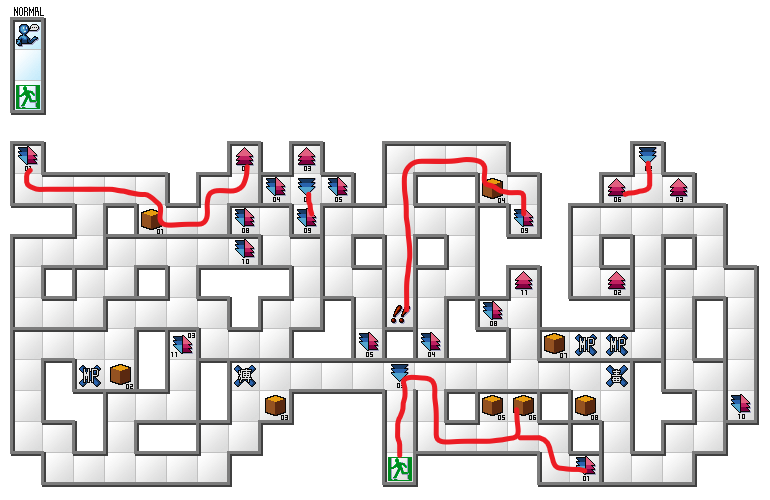

Most of the run relies on reflect strats. It's always advised to save before any fight because reflect strats can go wrong. Especially the last boss fight, as it is 3 fights back-to-back relying on getting the right attack reflected.
There's a glitch that allows you to go through locked or one-way doors in the game that's recurrently used in the run. To execute it, all you have to do is save in front of the door and reload the game.
Due to how demon affinity works in this game, there will be runs where you have more and less gems/items to gift to Leanan Sidhe. You want her to be at the highest possible affinity rate to be able to consistently use the HEY-HEY-HEY attack but life happens.
After the first half of the game, estoma stops working and the only way to avoid random encounters is to talk to them. There are some patterns that make certain demons consistently run away but it's still a very RNG heavy factor in the run.
There's some maps included in these notes but only some of them have guiding lines. Do familiarize yourself with the dungeons before running.
With this in mind, if you still want to run this game, enjoy the notes below.
First Death and Library
Name your character and your address. Leave the house and go to the Afro Tea House to meet Kumiko. Head to the library, talk to her then leave and hand your library card.
Go to the university, enter and then leave again. Go to the area with the mall and enter the small building to pick up tickets. Walk through the autoscroller.
On level up, put points into SPD「速」.
Go back to the Afro Tea House. Leave and get kidnapped by Sid Davis.
Walk to Sid Davis. Die and revive as Kyouji.

Go to the fortune teller to get money. Go to the weapon shop:
- Buy: 5K sword
- Sell: ランドールナイフ、ジャンビーヤ、レディ・スミス (Likely 1st,2nd,4th in menu)
Go to the medicine store and buy 3x Medicines (1st) and 1x Dis-Paralyze (3rd)
Go to special item shop (store right across the medicine store) and buy Back-Upper (Last) and 3x Estoma items (3rd)
Go to the hotel and get the comp. Grab chest with 1k Yen. Go back to the office and take the job.
Set options to Fast, Fast (速い、速い)
Leave and mall and head to the library.
Use an estoma item and walk to the boss.
- Sword then auto
- Stop auto and heal with medicines whenever needed.
Walk back to the mall and head to the fortune teller to get the money. Then walk to the office to get Rei.
Walk to the mountains and choose Gabriel as Rei's chosen demon (second option to the rigth)
University
Go to Azuma's house. Set party formation as: MC,-,-,Rei,-,-
Auto-equip Rei's equipment and auto-heal. Use an estoma item.
You might still get encounters on the way to the boss, you can either try to run away or talk to them to try to get them to go away.
Boss fight:
- First turn: Defend, Rakukaja
- Second: Defend, Dia on MC
- AUTO
Say YES to the mission. Go back to the arcade and go to the gun store:
- Sell all the weapons.
- Buy: 2x ドラグノフ(4th) and 25x bullets (Last)
- Auto-equip on MC
- Buy: 25x bullets (last) again
- Auto-equip on Rei
Go to medicine store, buy 3x Dis-poisons (4th)
Go to special item store, buy 7x Tetrakarn items (1st), 1x Curse Heal (2nd), 4x Estoma items (3rd) and 8x Makarakarn items (5th)
Go to the hotel and summon pixie.
Go to the bar and buy a Cool Slider (3rd) for MC and Rei. It boosts stats.
Leave and go to the university.
Go to status, set the auto preset as gun. Use an estoma item. Auto enemies on the way.
Put points into:
- MC: SPD「速」 until 17 then STR 「力」 until 13, then SPD「速」
- Rei: STR 「力」 until 5, then SPD「速」
Before the fight, summon pixie. Set party formation: Pixie,-,MC,-,-,Rei
Unequip all the armor.
Fight Sid Davis:
- Move pixie one slot to the right and use the Makarakarn item with MC -> auto
Fight Shiki Ouji:
- Move pixie one slot to the left, use the Tetrakarn item with MC and Gun with Rei -> auto
- Stop auto and use the Dis-Paralyze if needed
Points:
- MC: MC: SPD「速」 until 17 then STR 「力」 until 13, then SPD「速」
- Rei (if she's lvl18): 3 points in MAG「魔」 then STR 「力」
- Rei (if she's lvl19): 1 point in MAG「魔」 then STR 「力」
Mountain
Head to the mountains.
Use an estoma item and fight the demons on the way to the professor. These encounters are kinda scary, be careful.
On the way back use an estoma item and when you have around 2800MAG start talking to the demons.
Go back to the mall and go to the energizer, sell enough MAG to get 28k yen back.
Go to the gun shop:
- Sell all the weapons and bullets.
- Sell 3rd, 6th and 8th item in equipment
- Buy 3rd item
Go to armor shop. Enter and then leave and then re-enter so the items update.
- Buy 4th item
- Auto-equip on MC
Go to Kumiko's house, enter at 7/8 ascending so you can do the fight at FULL MOON.
- MC: Sword
- Rei: Tarunda -> Rakukaja -> Dragon ATM -> Dia on MC
- After point distribution, Rei's stats should be around 10 INT「知」, 12 MAG「魔」 and 17 SPD「速」
Go back to the arcade, enter the office. Leave and then re-enter and accept the job to go to the mansion in Asahi.
Set party formation: -,-,MC,-,-,Rei. Walk to Susano'o and hear his wise words. Then return to the arcade.
Go to the office, access the DDS-Net twice. Then make sure you have 2300MAG. If you have less, go to the energizer and buy the rest.
Go to the special item store. Buy 12x Tetrakarn items (1st).
Go to the hotel.
- Summon Kabuso「カブソ」, Ba「バー」, Nahatokobalt「ナハトコバルト」
- Kabuso「カブソ」x Ba「バー」= Bird 1
- Nahatokobalt「ナハトコバルト」x Kabuso「カブソ」= Bird 2
- Bird 1 x Bird 2 = Leanan Sidhe
Go to the museum. Enter and talk to the sign. Then go back to the arcade, go to the office and access the DDS-Net again. Then return to the museum.
Museum
Enemies at the museum are kinda hard so try to talk to them to dissuade them, save before entering the fight. Unequip all armor.
Set party formation: Pixie,-,-,MC,-,-.
- MC uses Tetrakarn items, Pixie defends.
- Points into SPD「速」
Go grab all the paintings and then get rei, then return to the arcade.
Go to the armor shop.
- Sell the paintings 「美しい絵、高価な像、珍しい壷」
- Buy 2x Helms (2nd)
- Equip on both.
- Sell the old helmets.
Go to medicine store, buy 3x Dis-stones (2nd), 3x Dis-paralyze (3rd), 3x Revival Beads (Last)
Go to the special item store, buy 5x Estoma items (3rd), 20x (total) Tetrakarn items (1st), 20x (total) Makarakarn items (5th)
Go to the bar, buy a drink for each of them (2nd to last).
Go to Madame's bar, talk to the madame. Then go to the TV station.
TV Station
Fight at least one enemy after getting the new sword and equipping it, angels are easy to defeat. Put points into SPD.
Before the fight, summon pixie to set the party formation:MC, -, Pixie, Rei, -, - . Use any incenses you picked up and save.
Unequip everything.
- MC: Makarakarn item; Rei: Tarukaja (4x turns)
- MC: Sword; Rei: Makarakarn item
- Points in SPD「速」 as always.
Go back and heal up, buy magic reflect items to have at least 20x (possibly sell mag for that).
Go to the fortune teller (say no - 1 TEXT BOX), head back inside and say whichever option. Go back to the office to get Rei and save.
Yakuza Mansion
Go to the yakuza mansion.
Equip all the items again.
Set party formation: Pixie, -, Rei, -, -, MC
Unequip everything, save.
Fight Tendou.
- MC: Makarakarn item; Rei: Tetrakarn item
- Points into SPD「速」
Go back and buy more reflect items. Head to the office and accept the mission. Then head to the big tower.
Tower
Try to enter the dungeon the furthest away from Full Moon possible. Equip all the items again.
Set party formation: Pixie, Rei, MC, Leanan, - , -
Give any gems you might have to Leanan as a GIFT
Fight Demiurge:
- MC: Makarakarn item; Rei: Tetrakarn item, Leanan: Extra -> 2nd attack
- Points into SPD「速」
Get sent to the astral world.
Astral World
Walk and get Kyouji to join. Auto-equip all the equipment on both. Then remove the gun from MC and give it to Kyouji.
Use estoma item and fight any random encounters with Megidola and reflect items.
Summon demons. Set formation as: Pixie, Kyouji, MC, -, -, -
Fight Sid Davis:
- Makarakarn items with MC and Gun with Kyouji
Hell
Use estoma and get out of hell.
Go to the gun store:
- Sell all the weapons and unnecessary equipment.
- Buy the 60k weapon (3rd)
Go to the armor store:
- Buy the 4th and 6th items.
- Auto-equip on both MC and Rei.
Go to the special item store:
- Buy max amount of Tetrakarn and Makarakarn items.
Go to the medicine store:
- Buy 3x Revival Beads (Last)
Go to the lockers and choose 0130. Head to the forest to get the quest from Sid Davis and be able to access the sewers. Then head to the sewers.
Sewers
After triggering the switch, head to the forest.
Forest
Enter the ancient tomb.
Tomb
Set the party formation: Pixie, Rei, MC, Leanan, - ,-
Give any gems you might have to Leanan as a GIFT
Unequip everything. SAVE
This fight is very unreliable. It is expected for it to take many tries.
- Makarakarn + Tetrakarn, Leanan uses Extra -> 2nd Attack